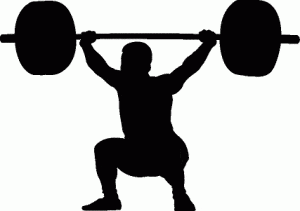
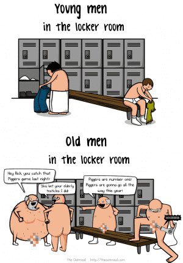

< < < Back
8 Rules Of Gym Etiquette – Return Of Kings
Going to the gym is, contra to what the Telegraph says, an enriching experience, particularly for the masculine man, but also for women and men who are not masculine, but wish to be. In addition to training your body to be stronger, faster, and more dexterous, the gym is also a place that implicitly trains your mind to be more goal-oriented. This can even be repurposed into forming the masculine tribe that most of us lack in today’s de-gendered world.
Some would also argue that gyms are a good place to get some strange for the evening: while nubiles in yoga pants are certainly a welcome distraction, I can’t help but feel that people who go to the gym primarily to have sex and secondarily to actually exercise are people that are half-assing their workout—or are the prototypical gay “gym bunny,” neither of which should be your reasons for going to a gym.
So, assuming that you are a novice to the gym who is going for the purpose of bettering yourself as a man, here are a few tips on how to properly conduct yourself in the gym. These will help you get the most out of your workout and turn yourself into the “local paragon” of fitness.
1. Keep your shirt on
Not that I doubt that you have the physique of a Herculean Adonis, but keeping your shirt on serves a variety of purposes—not the least of which is hygiene–leaving sweat and body oils on the bench or chair can lead to a variety of dermatological problems such as groin irritation, fungal infections, dermatitis (commonly referred to as cradle cap), and general rashes and hives.
Plus, leaving your myriad greases on the equipment makes it more difficult for the next person, which is just plain inconsiderate (I have actually seen a guy slip right off a machine because it was covered in the last guy’s sweat).
While we’re on this topic, I’d also like to say: please stop wearing those shirts that have no sides. While this will sop up the majority of the sweat from your chest and back, it still leaves about 30% of your torso exposed and sweaty. In addition, these just may make you come off as more of a douchebag than just taking your shirt off completely. Is it just me, or do these shirts look more like a bib than anything else? Well I suppose that it’s only fitting you wear a bib if you’re going to catch cradle cap and diaper rash as well.
2. Wipe your station down
This is related to the previous one, and it’s pretty simple: Wipe down the stuff you use, particularly any exercise that requires you to be in a supine or seated position. Any halfway decent gym will have a bottle of disinfectant and a hand towel hanging from the wall to use.
In addition to this obvious advice, might I also advise you to moisten that same towel and wipe any chalk that you use off the bar. While it won’t cause skin disease, it’s still fairly irritating to the next guy to get your chalk on his hands.
3. Use headphones
We all know that the music they play in most commercial gyms is, to put it bluntly, dogshit. My gym plays the most bland, interchangeable top 40 “music” you can imagine. Luckily, this can be easily remedied by using headphones—a memo that a few people who go to my gym didn’t seem to get. These people instead chose to bring speakers and blast their music—and their music was the worst sort of butt-rock that was only marginally better than the bubblegum pop on the loudspeaker.

4. Don’t stare at the yoga pants clad asses
Yes, they’re very nice. Don’t stare, don’t make little suckling motions with your mouth, and for god’s sake don’t start masturbating in the gym—it increases blood pressure and causes a drop in testosterone, which will ruin your workout. If you want the girl, go up to her and get her phone number like a proper man.

5. Don’t scream, grunt or drop the weights
First of all: Yes, I’m fully aware that screaming and grunting can have a positive effect on your strength for the same reason that martial artists use kiais—it forces the muscles of the back and abdomen to constrict, giving you an extra burst of power due to that proprioception stuff I’m always talking about. Regardless, don’t do it.
Secondly: By grunting and screaming, I’m not referring to the involuntary snort or grunt you’ll do when you’ve properly inhaled before the lift and the weight literally forces the air out of you—that’s the proprioception that I have repeatedly mentioned. I’m referring to the guys who will scream and holler before they’ve even lifted the weight, and keep up a continuous stream of vocal gibberish during the lift.
“But the guys in the World’s Strongest Man competition do it!” Yes they do, and they’re competing for huge cash prizes and sponsorships from every supplement company on the planet. YOU, in contrast, are not them. Of course, I freely admit I’m not nearly in the category of those WSM competitors either, but I don’t draw attention to myself by acting like a howling simpleton.
Also, if you’re really doing a heavy lift, you won’t be capable of forming multisyllabic words (And yes, I’ve seen and heard this), so stop doing fake screaming to help you with that oh-so-heavy 100 pound overhead press.
And stop dropping the weight on the ground, Ivan Drago—it’s distracting to the other gymgoers, it’s dangerous, and the owner of the gym ought to smack you upside the head for increasing his insurance premium.
6. Use a squat rack and power cage for their intended purpose
I’m hardly the first person to point this out, but: your double bicep curl does not need the use of a rack and Olympic bar. The rack is for men who want to do real exercises like squats, overhead presses, and deadlifts, exercises that absolutely need the rack to be done properly. Frankly, I have much greater esteem for a guy who uses these apparati to do body levers, v-sits, and other gymnastic static positions: while they could easily do these on a pull-up bar, parallel bars, or on a tree branch outside the building, these are at least useful and functional exercises. If you want to do bicep curls, use a smaller bar, dumbbells, or go find a bathhouse to join instead of a proper gym.
On that note:
7. Don’t do a million pointless exercises, use compound lifts
Many people when they start working out, will putter around doing a julienne of isolation exercises. Don’t do this—boil your workout down to 10 or so compound exercises that will work your entire body. It’ll make you bigger and functionally stronger, and save you a lot of time.

And finally:
8. Don’t walk around in a shower cap and nothing else
This is an affliction that seems to affect the elderly more than anything else, which has led to me seeing more pockmarked elderly penis than I’ve ever cared to. Perhaps it’s just that they’ve long since ceased giving a damn, but I still feel that for courtesy’s sake you should at least wear a towel. Plus, hygiene!

The tips enumerated above are simple and effective tips to help you get the most out of your workout, and ingratiate you to your fellow gymgoers.
Read More: 5 Questions To Identify Who Really Rules Over You